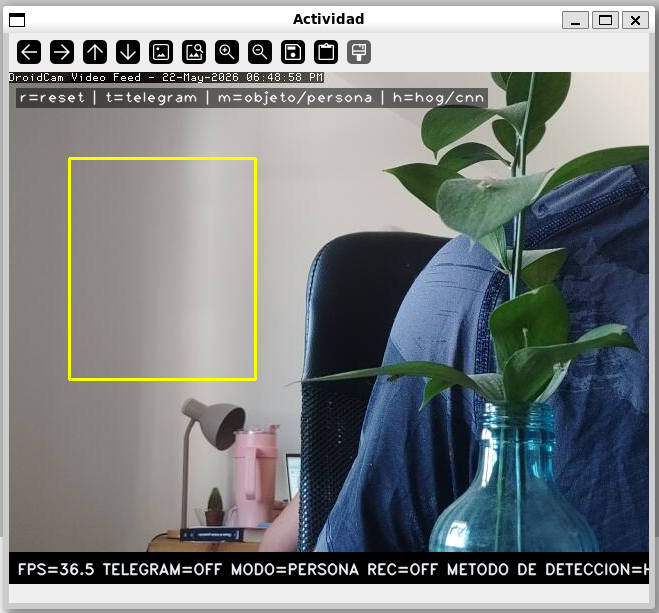
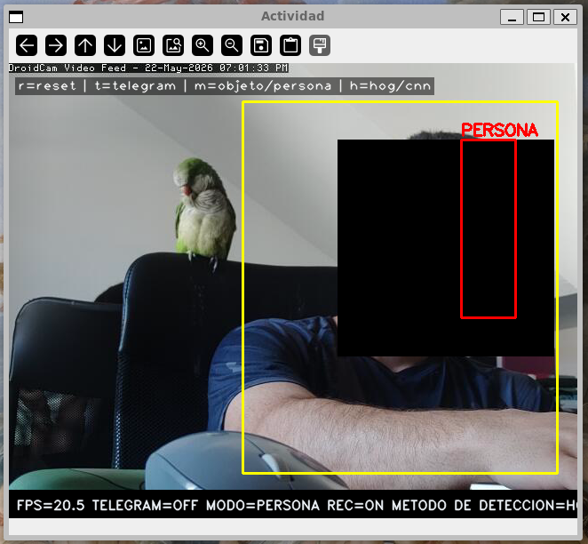
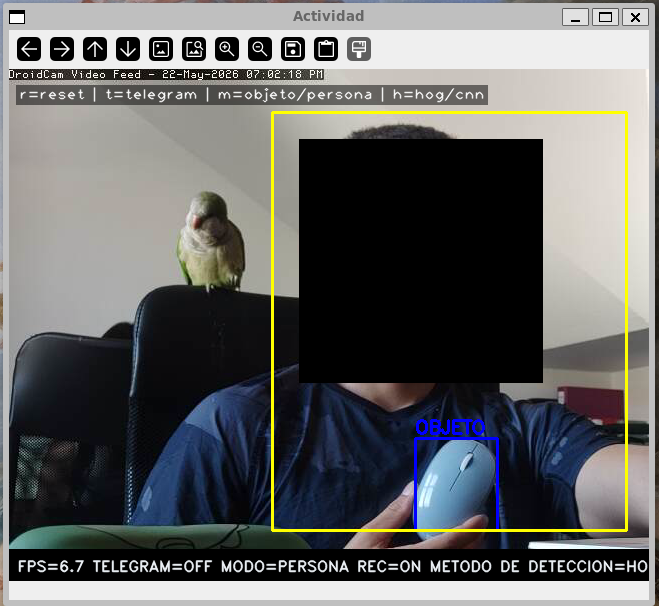
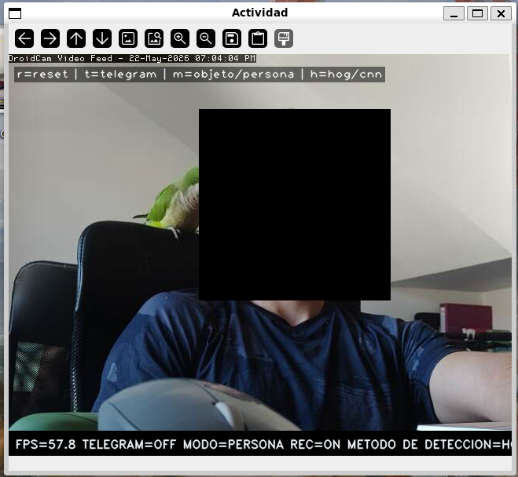
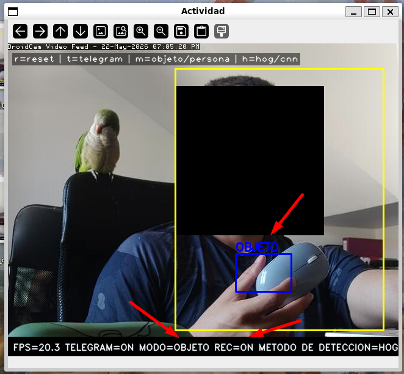
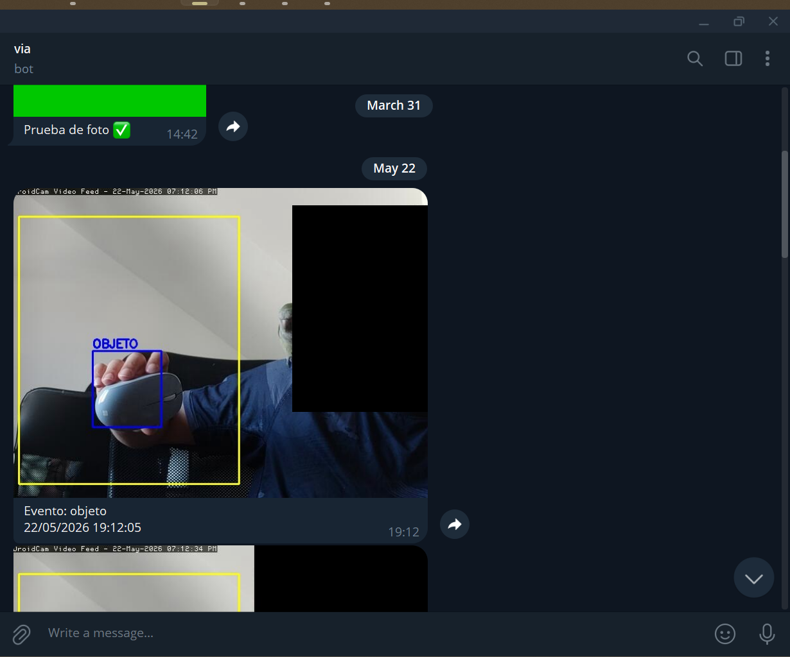
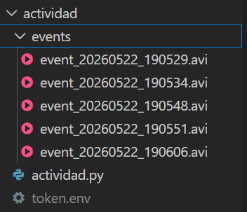

Detector de Actividad¶
Descripción¶
actividad/actividad.py detecta actividad en una ROI manual y dispara un evento cuando clasifica un contorno como persona (por forma del contorno MOG2) o cuando face_recognition reconoce una cara, lo que ocurra primero. Además anonimiza las caras detectadas y envía notificaciones con foto y clip de vídeo vía bot de Telegram.
Requisitos y ejecución¶
Entorno
Python 3.10+, OpenCV 4.9, NumPy 1.26, face_recognition, python-telegram-bot.
Credenciales necesarias
Antes de ejecutar, crea el fichero token.env dentro de la carpeta actividad/ con el token de tu bot de Telegram:
Configuración de la ROI
Al arrancar, haz dos clics sobre la imagen para definir la región de interés rectangular. Solo se procesará el movimiento dentro de esa región.
Arquitectura¶
flowchart TD
A[autoStream] --> B[cv.resize 640×480]
B --> C{¿Frame par?}
C -- Sí --> D[Reutilizar frame\nanonimizado cacheado]
C -- No --> E[anonymize\nhilo face_recognition]
E --> F[MOG2 + morfología]
F --> G{¿ROI activa?}
G -- Sí --> H[classify_motion\npersona / objeto]
H --> I{¿'persona'\nen motion_cats?}
E --> FR{¿Cara\ndetectada?}
I -- Sí --> EV[evento = True]
FR -- Sí --> EV
I -- No --> EV2[evento = False]
FR -- No --> EV2
EV --> J[EventRecorder.start\nfoto Telegram]
EV2 --> K[Dibujar HUD]
J --> L[Grabar pre+post buffer]
L --> M{¿Evento\nacabado?}
M -- Sí --> N[save_frames_to_video\nevents/*.avi]
M -- No --> K
N --> K
Parámetros clave¶
Clasificación de movimiento¶
| Criterio | Umbral | Justificación |
|---|---|---|
ratio = h/w |
> 1.35 | Las personas son más altas que anchas |
h |
> 60 px | Descarta detecciones diminutas |
fill = área/(w×h) |
< 0.80 | Las personas son menos compactas que cajas |
Parámetro más sensible: ratio h/w
Una persona agachada o sentada puede tener ratio < 1.35 y clasificarse como objeto. Para vigilancia estática donde las personas pasan de pie, los umbrales actuales funcionan razonablemente bien.
Anonimización de caras¶
| Parámetro | Valor | Descripción |
|---|---|---|
FACE_UPDATE_INTERVAL |
8 frames | Frecuencia de actualización de la detección |
FACE_SCALE |
0.25 | Resolución de inferencia (1/4 del frame original) |
| Margen del bloque | 35% | Ampliación del bbox antes de censurar |
HOG vs CNN para detección de caras
HOG es más rápido (~80 ms) pero falla con caras de perfil o parcialmente tapadas. CNN detecta mejor en condiciones difíciles pero triplica el tiempo de llamada (~300 ms). En exteriores o con cámaras en ángulo, considera cambiar a model="cnn".
Grabación de eventos¶
| Parámetro | Valor | Descripción |
|---|---|---|
pre_sec |
2 s | Duración del pre-buffer antes del evento |
| Post-buffer | 1 s tras último movimiento | Tiempo de cola al cerrar el evento |
Código clave¶
Detección y clasificación¶


La detección de personas combina la clasificación por contorno con el reconocimiento facial. Si cualquiera de las dos condiciones se cumple, se dispara el evento:
| actividad/actividad.py — condición de evento | |
|---|---|
Esto cubre casos que MOG2 no detecta: una persona que entra despacio en el encuadre (sin movimiento brusco suficiente para superar el umbral de área) o una cara visible aunque la silueta no cumpla el ratio h/w > 1.35.
Anonimización de caras¶

Grabación y alertas¶



events/ con los clips guardados automáticamente. El nombre incluye la marca de tiempo.Decisiones de diseno¶
Detección de personas con doble criterio (MOG2 + cara)¶
Para que el modo "persona" sea robusto, el evento se dispara si cualquiera de las dos condiciones es cierta:
classify_motion()clasifica un contorno MOG2 como "persona" (ratio h/w > 1.35, h > 60 px, fill < 0.80).face_recognitiondetecta al menos una cara en el frame actual.
El criterio de silueta falla con personas agachadas o sentadas; el de cara falla si la persona está de espaldas o fuera de encuadre. Juntos se complementan. El criterio facial aprovecha el hilo de detección que ya existe para la anonimización, sin coste extra.
Clasificación heurística frente a detector neural¶
En lugar de HOG+SVM o YOLO, los contornos del foreground se clasifican por tres criterios geométricos (→ ver classify_motion(), línea 1). Es una apuesta deliberada por velocidad y simplicidad — un detector neural anadiría cientos de milisegundos en CPU. El precio es conocido: personas agachadas o sentadas se clasifican como objeto; en ese caso el criterio de cara actúa como respaldo.
Detección de caras en hilo separado con caché de 8 frames¶
face_recognition tarda ~80 ms (HOG) o ~300 ms (CNN), demasiado para cada frame. La solución es un face_worker dedicado que reutiliza el último resultado durante 8 frames (→ ver anonymize(), línea 14). El stream no se bloquea aunque la máscara vaya ligeramente rezagada cuando una cara entra o sale de plano. La detección trabaja además a 1/4 de resolución (FACE_SCALE=0.25) para reducir el tiempo de inferencia. Además, face_worker implementa un periodo de gracia de 3 ciclos (MAX_GRACE=3): si la detección devuelve cero caras, mantiene las posiciones anteriores durante 3 actualizaciones antes de borrarlas, evitando parpadeos cuando una cara queda momentáneamente fuera del campo de la cámara.
Pre-buffer con deque de tamano dinámico¶
El clip guardado incluye los segundos previos al evento gracias a un deque circular. Su tamano se recalcula cada frame a partir del FPS real (max(1, int(pre_sec * fps))), de forma que el pre-buffer siempre representa los mismos segundos reales independientemente de si la cámara va a 15 o 30 fps.
Frames pares descartados del procesamiento¶
El bucle principal salta el procesamiento en frames pares, reutilizando el último frame anonimizado. Esto reduce a la mitad las llamadas a anonymize, clean_mask y classify_motion sin que sea perceptible visualmente a 25+ fps.
Telegram como canal de alertas¶
La foto se envía desde el hilo principal para garantizar que corresponde exactamente al frame que disparó el evento; el clip se guarda y envía al terminar la grabación. Si token.env no existe el programa falla en el arranque — fallo rápido y visible antes de que el sistema quede corriendo sin alertas.
Limitaciones¶
Limitaciones conocidas
- Clasificación heurística: personas agachadas o sentadas pueden clasificarse como "objeto".
- Cualquier vibración de la cámara genera falsos positivos en todo el foreground.
- Si
token.envno existe o está mal configurado, el programa lanza excepción al arrancar.
Dificultades de anonimización
La anonimización de caras es inherentemente imperfecta en las condiciones actuales:
- Resolución de inferencia reducida (
FACE_SCALE=0.25): detectar caras a 1/4 del tamano original hace que caras pequenas o lejanas pasen desapercibidas, dejando rostros sin censurar. - Modelo HOG: no detecta caras de perfil, caras parcialmente tapadas ni caras en condiciones de poca luz. Cambiar a
cnnmejora la cobertura pero multiplica el tiempo de inferencia (~300 ms). - Retraso de hasta 8 frames: la detección solo se lanza cada 8 frames. A 25 fps, una cara puede aparecer y desaparecer en pantalla sin haber sido nunca anonimizada si su tránsito dura menos de ~320 ms.
- Descarte de frames pares: el bucle principal salta el procesamiento en frames pares, por lo que en fotogramas de buffer de pre-evento puede quedar almacenado el último frame anonimizado en lugar del frame real en esos instantes.
- Grace period parcialmente visible: durante los 3 ciclos de gracia tras perder una cara, la región censura una posición desactualizada; si la persona se ha movido, la cara real puede quedar al descubierto momentáneamente.